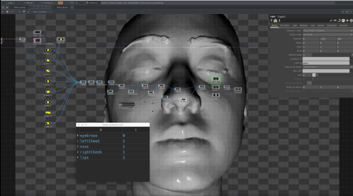
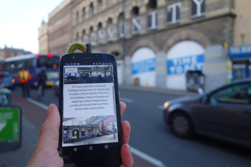

Assosiate Lecturer on this Masters degree level module on the MA Design: Expanded Practice. This masters level module is led by Jennifer Bain.
Module leader on undergraduate module on BA Creative Media Design, University of the West of England
Through this module students explored the interrelationship between software and the material world. It was a practice based module, and students learned through practical workshops including: lectures, seminars, tutorials, field research, guest lectures, project supervision, practical classes and technical workshops. develop your own projects based on the concepts and technology we explore.
I designed and led this undergraduate module, with guidance from programme leader, Rod Dickinson. An interactive “botox simulator” by 3rd year Hardwarae Hacking student
In this module students designed mobile media that connects people and place. They developed ideas through situated or responsive activities: open-ended methods to engage hands-on and in-situ with some of the underlying ideas in the module. And designed mobile apps that encouraged participants to re-view, re-imagine, or re-think their surroundings.
I designed and led this undergraduate module, with guidance from programme leader, Rod Dickinson.
This module was initially designed by Andrew Kleindolph, and I made some additions, and led the teaching whilst he was on sabbatical.
This module was initially designed by Andrew Kleindolph, and I made some additions, and led the teaching whilst he was on sabbatical.